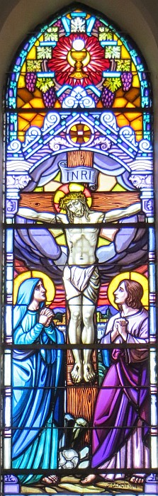

Épis Pilate prînt Jésû et l'fît vrédîndgi. Et les soudards teurtchîdrent eune couronne d'êpîngnes et la mîndrent sus sa tête, et l'habilyîdrent d'un pourpre manté. I' l'achîtraient et dîthaient, "J'saluons l'Rouai des Juis!" et lî baillaient des cliamûses. Pilate s'èrdêhalit et lus dit, "Êv'chîn, j'vos l'amène pouor vos faithe à saver qu'jé n'trouve pon d'faute pouor lé condamner." Jésû s'dêhalit don, portant la couronne d'êpîngnes et l'pourpre manté. Pilate lus dit, "Né v'chîn l'houmme!" Quand les grands prètres et l's officièrs l'vîdrent, i' lus êbriyîdrent, "Crucifyiz-lé! Crucifyiz-lé!" Pilate lus dit, "Prannez-lé don vos-mêmes et crucifyiz-lé! Mé, jé n'trouve pon d'faute pouor lé condamner." Les Juis lî rêponnîdrent, "J'avons eune louai, et s'lon chutte louai i' dévthait mouothi car i' fit l'èrcliâme d'êt' lé Fis du Bouôn Dgieu." Assa quand Pilate ouït chennechîn, i' 'tait acouo pus êffrité. I' rentrit dans la salle d'la cour et d'mandit à Jésû, "Dé ioù qu'tu'es?" Mais Jésû n'rêponnit pon. Épis Pilate lî dit, "Ch'est-i' qu'tu r'fuse dé m'pâler? N'sai-tu pon qu'j'ai l'pouvé dé t'lâtchi, et l'pouvé dé t'crucifier?" Jésû lî rêponnit, "Tu n'éthais pon ieu d'pouvé sus mé si chenna n't'avait pon 'té bailli d'là-haut; lé chein don tchi m'baillit à té est l'pus grand pécheux. Auprès chenna Pilate tâchait dé l'lâtchi, mais les Juis lus êbriyaient, "S'ou lâtchiz ch't houmme-là, ou n'êtes pon l'anmîn d'César. Lé chein tchi fait l'èrcliâme d'êt' un rouai, s'oppose à César."
Quand Pilate ouït ches patholes i' fit dêhaler Jésû et s'assiévit sus l'banc ès juges dans un endrait tch'a nom L'Pavé, ou coumme nou dit en Hébreu: Gabbatha. Assa ch'tait l'Jour des Prépathâtis pouor la Pâque et ch'tait d'vièrs méjeu. I' dit ès Juis, "Né v'chîn vot' rouai!"
I' briyîdrent, ieux, "Fiche dé li! Fiche dé li! À la crouaix auve li!"
Pilate lus d'mandit, "Ch'est-i' qué j'cliouethai vot' Rouai à la crouaix?"
Les grands prêtres rêponnîdrent, "J'n'avons pon d'rouai, raîque l'empéreu." Épis i' lus enchèrgit dé l'cliouer à la crouaix, et il' emm'nîdrent Jésû.
Épis Pilate emm'nit Jésû et l'fit vresser. Et les soudards èrteurtchîdrent eune couronne d'êpîngnes et l'î mîndrent sus la tête, et lî mîndrent eune pourpre robe. I' l'atchilyîdrent dèrché et dèrché, en dithant, "Salut, Rouai des Juis!" et en l'talmûthant.
Pilate s'èrdêhalit et lus dit, "Êv'chîn, j'vos l'mouontre à seule fîn d'vos faithe assaver qué j'n'ai rein prouvé contre li." Et né v'là Jésû dêhalé, attînfé d'la couronne d'êpîngnes et d'la pourpre robe. Pilate lus dit, "Né v'chîn l'homme!"
Quand les grands prêtres et l's officièrs lé vîdrent, i' briyîdrent, "Cliouez-lé à la crouaix! Cliouez-lé à la crouaix!"
Pilate lus dit, "Prannez-lé vos-mêmes pouor lé cliouer à la crouaix. Mé, j'n'ai rein prouvé contre li."
Les Juis lî rêponnîdrent, "J'avons eune louai, et s'lon chutte louai-là i' dévthait mouothi viyant qu'il a r'cliâmé d'êt' lé Fis d'Dgieu."
Assa quand Pilate ouït chenna, i' vînt pus êffrité qu'janmais. I' rentrit dans la cohue et d'mandit à Jésû, "Dé iou qu'tu'es?" Mais Jésû n'rêponnit mot. Pilate don lî dit, "R'fuse-tu d'même dé m'pâler? Né sai-tu pon qu'j'ai l'pouver dé t'lâtchi, et l'pouver dé t'cliouer à la crouaix?"
Jésû lî rêponnit, "Tu n'éthais pon d'pouver sus mé sénon qué chenna t'avait 'té bailli d'en haut; ch'est en tchi l'chein tchi m'blioutchit et m'baillit à té est coupabl'ye d'un pus grand péché."
Et maîsouain Pilate êcanchit d'lé lâtchi, mais les Juis briyîdrent, "S'ou lâtchiz ch't-homme-là, ou n'êtes d'aut' l'anmîn d'l'empéreu. Châtchun tchi r'cliâme d'êt' un rouai s'affronte à l'empéreu."
Quand Pilate ouït ches patholes, i' fit dêhaler Jésû et s'assiévit sus l'banc du juge dans l'Bel Pavé, tch'est un endrait app'lé en Araméen: Gabbatha. Assa ch'tait l'Jour des Prépathâtis pouor la Pâque, et i' 'tait d'vièrs méjeu. I' dit ès Juis, "Né v'chîn vot' Rouai!"
Ieux, i' briyîdrent, "Halez-lé! Halez-lé! Cliouez-lé à la crouaix!"
Pilate lus d'mandit, "J'cliouethai-t-i' don vot' Rouai?"
Les grands prêtres rêponnîdrent, "J'n'avons pon d'rouai sénon l'empéreu."
Épis i' l'us baillit pouor êt' clioué à la crouaix.
 Épis don i' l'us d'livrit pouor êt' crucifié. Et il' emm'nîdrent Jésû. Et i' s'en fut bâté d'sa crouaix au lieu tch'a nom La Cranne (en Hébreux, Golgotha) où'est qu'i' l'crucifyîdrent auve deux aut's, l'iun d'un bord et l'aut' d'l'aut' bord, et Jésû au mitan.
Épis don i' l'us d'livrit pouor êt' crucifié. Et il' emm'nîdrent Jésû. Et i' s'en fut bâté d'sa crouaix au lieu tch'a nom La Cranne (en Hébreux, Golgotha) où'est qu'i' l'crucifyîdrent auve deux aut's, l'iun d'un bord et l'aut' d'l'aut' bord, et Jésû au mitan.
Et Pilate affichit un avis sus la crouaix tch'avîsait: "Jésû l'Nazarétchien, Rouai des Juis". Y'en avait des Juis tch'èrmèrtchîdrent ch't avis viyant qu'la pliaiche où'est qu'Jésû 'tait crucifié 'tait d'amain d'la ville, et ch'tait êcrit en Hébreux, en Latîn et en Grec.
Et les grands prêtres des Juis dîdrent à Pilate, "I' n'est pon d'mêtchi d'mett' 'Rouai des Juis', au run d'chennechîn: 'I' dit, "Mé, j'sis l'Rouai des Juis"'."
Mais Pilate lus rêponnit, "Chein qu'j'ai êcrit, j'n'm'en vais pon l'changi."
Épis les soudards, quand il' avaient crucifié Jésû, prîndrent ses habits, et fîtent quat' lots, à châtchun des soudards un lot, épis la câsaque étout. La câsaque 'tait sans couôtuthe, couôsue du haut en bas. I' lus ent'-dîdrent don, "Jé n'pouvons pon la dêcouôtre, mais halons au sort pouor l'chein tchi l'étha." Et ainchîn l'êcrituthe fut accomplyie tchi dit, "I' lotîdrent mes habits entre ieux, et pouor mes habits i' halîdrent au sort." Et né v'là chein qu'les soudards fîdrent.

Aupi d'la crouaix à Jésû 'taient mâtées sa méthe, la soeu à sa méthe, Mathie femme dé Cléopas, et Mathie Magdalène. Quand Jésû êpyit sa méthe et l'discipl'ye qu'il aimait bein auprès d'li, i' dit à sa méthe, "Ma méthe, né v'lo tan fis!" Épis i' dit au discipl'ye, "Né v'lo ta méthe!" Et d'pis chu jour-là l'discipl'ye la louogeait siez li.
Auprès chenna, étant d'avis qu'tout a 'té fait à seule fîn d'accomplyi chein tch'avait 'té êcrit, Jésû dit, "J'ai sé!" Y'avait d'amain eune cannée d'vîn sû et nou-s'y trempit eune êponge qu'nou-s'apitchit sus eune tigue d'hysope et l'aveignit à sa bouoche. Quand Jésû avait heunmé l'vîn, i' dit, "V'là tch'est ag'vé." Épis la tête lî cahuchit et i' rendit l'âme.
Assa ch'tait l'Jour des Prépathâtis pouor la Pâque et les Juis n'voulaient pon qu'nou laîssîsse les corps clioués ès crouaix duthant l'sabbat (ch'est en tchi chu sabbat 'tait eune grande fête) et i' d'mandîdrent à Pilate qu'nou bûchîsse les gambes ès cheins ès crouaix et qu'nou halîsse les corps. Les soudards vîndrent don et bûchîdrent les gambes au preunmyi épis à l'aut' des cheins tch'avaient 'té clioués à la crouaix auve Jésû. Mais quand i' vîndrent à Jésû, i' vîdrent qu'i' 'tait dêjà mort et i' n'lî bûchîdrent pon les gambes.
Au run, iun des soudards pèrchit ses côtes atout san pitchet et d'siette il en vèrsit du sang et dé l'ieau. (Lé chein tchi vit chennechîn l'a têmouongni à seule fîn qu'ou piêssêtes vos y fier. San têmouongnage est vrai et il asseûthe qué ch'est la véthité). Tout chennechîn s'adonnit à seule fîn qu'chein tch'avait 'té êcrit fut accomplyi: "Autchun d'ses os né s'sa bûchi." Épis acouo chennechîn avait 'té êcrit: "I' r'gardéthont l'chein qu'il' ont pèrchi."
À r'tou d'chenna, Jôseph d'Arimathée, tchi 'tait un siêtheux d'Jésû (mais tchi l'siêthait en s'gret, ayant peux des Juis) d'mandit à Pilate dé lî laîssi emporter l'corps d'Jésû, et Pilate à l'accorder. Épis don i' s'en fut emporter l'corps. Et v'là tchi vînt Nicodème (lé chein tchi 'tait v'nu à Jésû la niet) auve un ballot d'un mêlange dé myrrh et d'aloé, tchi b'sait dans les septante livres. I' prîndrent lé corps dé Jésû, l'enfliubîdrent en lîn atout l's êpices, coumme i' font d'amors les Juis pouor l's entèrrements. Assa y'avait un gardîn pon bein liain d'l'endrait d'la cliouethie à la crouaix, et dans chu gardîn-là y'avait eune neuve tombe dans tchi fis d'âme n'avait 'té janmais êtrav'lé. Et don, viyant qué ch'tait l'jour d'la Graiethie pouor les Juis et qu'la tombe 'tait d'amain, ch'fut là qu'il' êtrav'lîdrent Jésû.
Viyiz étout:
{kind=link}